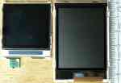
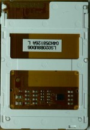
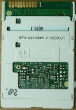
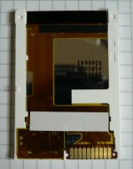
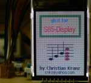
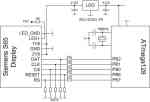
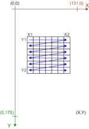
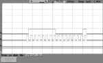

 Siemens used for the mobile phones S65, M65, CX65 and SK65 a 16-bit color TFT display with 132x176 pixel. This display has integrated white backlight LED's and an attractive screen size. The display is available for less than 20 EUR in phone part shops and ebay. The picture on the right compares the well known Nokia 6100 display with the S65-display.
The following pages describe how to use this display in own applications. Actually it is focused on the Atmel AVR processor but from the description it should be possible to use it with other controller also.
Currently there are three different display types known.
| LS020xxx | LPH88xxxx | L2F50xxx |
|---|---|---|
|  |  |  |
| Sharp | Hitachi HD66773 controller | Epson L2F50xx controller |
The table above shows the different versions. They are from different supplies, using different controller and are therefore not compatible. You can download driver for all displays in the software section.
| Software | Hardware |
|---|---|
|  |  |
| Programming | Reengineering |
|  |  |
{kind=link}
{kind=link}
{kind=link}
{kind=link}